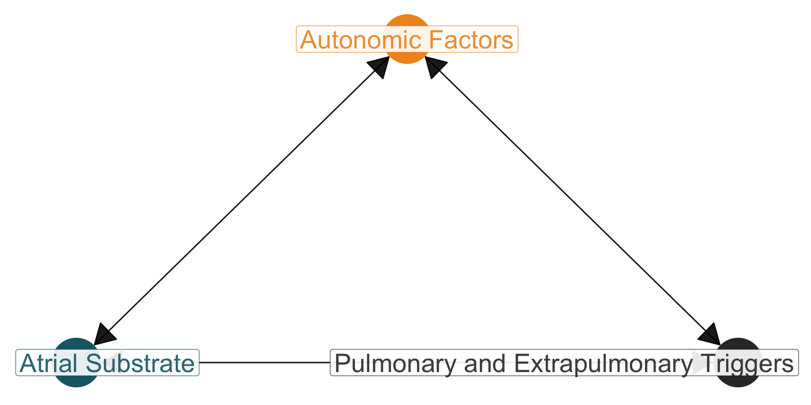

Autonomic and Structural Mechanisms in Atrial Fibrillation
T32/TPIPCVM Seminar
Division of Cardiology, University of Illinois Chicago
Rollins School of Public Health, Emory University
Monday, December 18, 2023
Introduction
About Me
- Doctorate of Medicine, Texas A&M University (2012-2016)
- Internal Medicine Resident at the Emory University J. Willis Hurst Internal Medicine Residency (2016-2019)
- Postdoctoral Research Fellow in the TL1 Scholars Program at Emory University
- Master of Science, Rollins School of Public Health, Emory University (2019-2020)
- General Cardiology Fellow at University of Illinois Chicago (2020-2024)
- Research Fellow in the T32 Training Program in Personalized Cardiovascular Medicine (TPIPCVM) (2022-2024)
- Principle Investigator of F32 Award (2022-2024)
- Clinical Cardiac Electrophysiology Fellow at the University of Utah (2024-2026)
Funding
NIH/NHLBI
- F32HL154707
- T32HL139439
- T32HL130025
- R01HL150586
NIH/NCATS
- TL1TR002382
- UL1TR002378
No Disclosures
| Abbreviations | Definitions |
|---|---|
| (p)AF | (paroxysmal) atrial fibrillation |
| AAD | anti-arrhythmic drugs |
| ANS/SNS/PNS | autonomic/sympathetic/parasympathetic nervous sytem |
| CAD, MI | coronary artery disease, myocardial ischemia/infarction |
| EPS, EAM | electrophysiology study, electro-anatomical mapping |
| GP | ganglionated plexi |
| HF, LF HRV | high & low frequency heart rate variability |
| LA, RA, LV, RV | left/right atrium/ventricle |
| NPY, Gal | neuropeptide Y, galanin |
| SNS/VNS | sympathetic/vagal nerve stimulation |
A consistent color scheme is provided throughout.
- Computational & digital signal processing methods will be noted in green
- Clinical data that requires a physician or cardiologist to obtain are noted in red
- Arrhythmia and electrical focused work is noted in yellow
- Epidemiological or genetic based methods are noted in blue
Objectives
- Know the general clinical mechanisms in arrhythmogenesis
- Differentiate between substrate and trigger contributions
- Understand methods to evaluate structural changes
- Recognize autonomic influences on arrhythmogenesis
Outline
- Historical context of atrial fibrillation
- Importance of both autonomic, structural, and triggered factors
- Comparative anatomy and physiology
- Coumel’s triangle of arrhythmology
- Substrate considerations in arrhythmic risk
- Phenotyping substrates
- Genetic variants in atrial myopathy
- Autonomic influences in arrhythmic risk
- Neurocardiac axis
- Mental stress pathways
- Future directions
Historical Context
Atrial fibrillation overview
A supraventricular tachyarrhythmia characterized by uncoordinated atrial activation with subsequent deterioration of atrial mechanical function
- Most common sustained arrhythmia in adults
- ~40% develop AF after age of 55 years (Michaud and Stevenson 2021)
- Risk factors include: age, CAD, male sex, European ancestry, hypertension, obesity, smoking, sleep apnea, family history of AF in relatives
- 20% of new diagnoses are secondary to acute precipitant (e.g. surgery, pneumonia)

Figure 1: The progression after developing AF can be cyclical, such that AF begets AF, adapted from Rivner (2020)

Figure 2: Packer (2020) describes how AF can be preceded by atrial myopathy, predominantly seen with enlarged left atria due to atrial mechanical dysfunction.
Outline
- Historical context of atrial fibrillation
- Importance of both autonomic, structural, and triggered factors
- Comparative anatomy and physiology
- Coumel’s triangle of arrhythmology
- Substrate considerations in arrhythmic risk
- Phenotyping substrates
- Genetic variants in atrial myopathy
- Autonomic influences in arrhythmic risk
- Neurocardiac axis
- Mental stress pathways
- Future directions
Comparative physiology
- Larger atria are seen in larger mammals, such as elephants and whales, proportional to allometric scaling (Figure 3)
- Prevalence of AF is not consistently associated with atrial size, e.g. Figure 5
- Atrial fibrillation is the most common cardiac abnormality in horses (Decloedt et al. 2020), but rare in underwater mammals
- Atrial arrhythmias in aquatic mammals are related to diving (baroreceptor and diving reflexes), shown in Figure 6
Is there more to atrial fibrillation than atrial size?

Figure 3: Atrioventricular conduction is a consequence of overall mass (and cardiac mass), due to allometric scaling, (Meijler1985a?)

Figure 4: An example strip of a humpback whale, with visible P waves, obtained by Meijler et al. (1992)

Figure 5: Signal-averaged ECG showing a PR interval of 400 ms, a QRS duration of 200 ms, and a QT interval of 700 ms, generated by Meijler et al. (1992)

Figure 6: Atrial arrhythmias noted predominantly during ascent and not descent in diving seals and dolphins, by Williams et al. (2015)
Outline
- Historical context of atrial fibrillation
- Importance of both autonomic, structural, and triggered factors
- Comparative anatomy and physiology
- Coumel’s triangle of arrhythmology
- Substrate considerations in arrhythmic risk
- Phenotyping substrates
- Genetic variants in atrial myopathy
- Autonomic influences in arrhythmic risk
- Neurocardiac axis
- Mental stress pathways
- Future directions
Arrhythmia mechanisms
Multiple mechanisms are at play in AF simultaneously in AF, and may manifest in a similar fashion.
Antzelevitch and Burashnikov (2011):
- Re-entry functionally or around scar/fibrosis
- Local firing due to increased/enhanced automaticity
- Triggered activity due to early or delayed afterdepolarizations

Figure 7: Basic mechanisms of arrhythmia adapted from Grune, Yamazoe, and Nahrendorf (2021)

Figure 8: Types and triggers of AF, adapted from Michaud and Stevenson (2021)
Coumel’s triangle
Figure 9: Simplified Coumel’s triangle representing relationships between factors that contribute to arrhythmogenesis, adapted from Coumel (1994)

Figure 10: Coumel’s triangle for AF from Cheniti et al. (2018)
Differential contributions
- Spectrum between trigger-predominant and substrate-predominant
- Length of episodes of AF are related to both triggers and substrate
- Staccato subtypes are short and frequent, but predominantly in lower-burden patients
- Legato subtypes are long and infrequent, but predominantly in higher-burden patients
- Underlying mechanism of arrhythmia likely vary between these types in terms of onset and maintenance of arrhythmia

Figure 11: Atrial fibrillation burden and episode duration are distinct, and subtypes exist. Legato is in upper left, and staccato is in lower right. Adapted from Wineinger et al. (2019)
Outline
- Historical context of atrial fibrillation
- Importance of both autonomic, structural, and triggered factors
- Comparative anatomy and physiology
- Coumel’s triangle of arrhythmology
- Substrate considerations in arrhythmic risk
- Phenotyping substrates
- Genetic variants in atrial myopathy
- Autonomic influences in arrhythmic risk
- Neurocardiac axis
- Mental stress pathways
- Future directions
Substrate Considerations
Fibrosis and scar
- AF is sustained predominantly through re-entry mechanisms
- Scar and low-voltage areas become regions for functional re-entry
- Therapeutic strategies have targeted limiting the available area for re-entry to occur (Calkins et al. 2017)
- Catheter ablation, with 60-90% 1-year AF-free survival
- Surgical maze procedure, with 80% success

Figure 12: Multimodal imaging approaches are available to visualize fibrosis and scar in the atria, Goldberger et al. (2015)

Clinically, low-voltage areas, potential surrogates for scar and fibrosis, can be visualized during electrophysiology studies.

Figure 13: Low voltage areas can be quantified via MRI, such as by the Utah Criteria (Mahnkopf et al. (2010))
Outline
- Historical context of atrial fibrillation
- Importance of both autonomic, structural, and triggered factors
- Comparative anatomy and physiology
- Coumel’s triangle of arrhythmology
- Substrate considerations in arrhythmic risk
- Phenotyping substrates
- Genetic variants in atrial myopathy
- Autonomic influences in arrhythmic risk
- Neurocardiac axis
- Mental stress pathways
- Future directions
Genetic influences on substrate
- A modifier of cardiac substrate are genetic variants
- Choi et al. (2018) identified TTN loss-of-function variants and early-onset AF (most commonly associated genetic variation with AF)
- Manifestation of atrial fibrillation occurs through atrial myopathy, which may be identified through different imaging modalities including ECG (Verweij et al. 2020)
ECG prediction of TTN variants
Background: VUS/LP/P TTN variants may cause structural atrial changes (an atrial myopathy) and/or conduction changes.
Proposal: Using the TTN gene as a case study, ECG features can be extracted that classify and identify samples with deleterious variants, based on in silico predictors (PolyPhen, SIFT, REVEL), in a population with AF.
Approach: Utilize sinus rhythm ECGs from patients with WES/CGS with paroxysmal AF. Develop beat-by-beat algorithm to identify features that may be associated with VUS/LP/P TTN variants.
ECG data
n = 298patients were available and had ECG in sinus rhythm at some point from 2010 to 2023- This amounted to
n = 7953unique ECG that were thought to be in sinus rhythm - Using a wavelet-decomposition approach, identified morphology of P wave, QRS complex, and T wave and created single-beat structures
- Using these
n = 51493beats, there weren = 6202cases (which representsn = 36individuals with potential pathogenic TTN variants (based on SIFT/PolyPhen scores) - Convoluted neural network approach to classify cases/controls
<Electrical Signal>
-------------------
Recording Duration: 10 seconds
Recording frequency 500 hz
Number of channels: 12
Channel Names: I II III AVF AVL AVR V1 V2 V3 V4 V5 V6
Annotation: ecgpuwave

Initial results
Training sample
- Training accuracy was
88%with2%loss after total of 10 steps - Visualized in Figure 14
Testing sample
- Testing accuracy was
85%with13%loss - Example: single beat (control) may have a confidence of
75%in being a control

Figure 14: First 10 epochs of training

Figure 15: Using an open-source software in MATLAB, we have developed a pipeline to evaluate intracardiac findings from electrophysiology studies
Next steps
- Evaluate model-explainability (e.g. how heavily P-wave morphology influences confidence)
- Expand to additional genes associated with AF
- Validate in a larger cohort
- Correlate with intracardiac EGM and EAM findings
Outline
- Historical context of atrial fibrillation
- Importance of both autonomic, structural, and triggered factors
- Comparative anatomy and physiology
- Coumel’s triangle of arrhythmology
- Substrate considerations in arrhythmic risk
- Phenotyping substrates
- Genetic variants in atrial myopathy
- Autonomic influences in arrhythmic risk
- Neurocardiac axis
- Mental stress pathways
- Future directions
Autonomic Influences
Neurocardiac axis
- Neurocardiac axis is a hierarchical system of SNS and PNS afferent/efferent circuits that interact at multiple levels (Armour et al. 1997)
- Cortex ↔︎ brainstem
- Spinal cord ↔︎ extracardiac ganglia (e.g. stellate)
- Intrinsic cardiac nervous system (ICNS) ↔︎ heart
- Autonomic regulation is critical in the development of most CV disease
- Dysregulated catecholamines in heart failure
- Post myocardial infarct VF
- Triggered arrhythmias such as VT

Figure 16: Cardiac neurotransmission Shivkumar et al. (2016)
- Lower levels of networked structures (ICNS, hypothalamus) integrate afferent information about metabolic demands
- Higher levels of networked structures (amydala, cortex) integrate lower networks and generate conscious/unconscious CV state representations
- Allows for environmental/psychological factors to interplay with cardiac physiology, e.g. mental stress causing arrhythmia
Evolution of treatment
- Haïssaguerre et al. (1998) identified pulmonary vein triggers for AF (associated with AF approximately 50% of the time)
- Pappone et al. (2004) identified ganglionic plexi as targets for AF ablation (34% of patients in the study had complete denervation, and had less AF recurrence)
- Narayan, Krummen, and Rappel (2012) identified rotors as targets for AF ablation (rotors were identified in 98% of patients, and 86% of patients had AF termination)
- Báez-Escudero et al. (2014) found parasympathetic denervation using alcohol infusion into the Vein of Marshall led to decreased AF burden
- GANGLIA-AF, paroxysmal AF randomized to PVI or atrial GP ablation, decreased AAD dosages in GP group, n = 102 (M.-Y. Kim et al. 2022)
Pulmonary vein isolation is a component to the treatment of AF, but additional pathways exist that have need to be explored.
Outline
- Historical context of atrial fibrillation
- Importance of both autonomic, structural, and triggered factors
- Comparative anatomy and physiology
- Coumel’s triangle of arrhythmology
- Substrate considerations in arrhythmic risk
- Phenotyping substrates
- Genetic variants in atrial myopathy
- Autonomic influences in arrhythmic risk
- Neurocardiac axis
- Mental stress pathways
- Future directions
Perturbations to the ANS
Chronic mental stress:
- Inflammatory mechanisms (Hammadah, Sullivan, et al. 2018; Pollitt et al. 2008)
- Autonomic mechanisms (Carney, Freedland, and Veith 2005; Huang et al. 2018; Penninx 2017; Smolderen et al. 2017)
- Associated with many changes to cardiac physiology (Strike and Steptoe 2003)
Acute mental stress:
- Peripheral vasoconstriction (J. H. Kim et al. 2019; Lima et al. 2019)
- Coronary vasomotion (Hammadah, Kim, et al. 2018)
- Mental stress-induced myocardial ischemia (Vaccarino et al. 2021), as seen in Figure 17

Neuropsychological effects on cardiac physiology adapted from Taggart et al. (2011)

Figure 17: Vaccarino et al. (2021) published in JAMA the relationship between mental-stress induced myocardial ischemia and CVD mortality

Shah et al. 2023 (under review) found that ANS dysfunction due to mental stress increased the risk of CVD mortality from arrhythmic etiology, e.g. VT/VF, by 5-fold.
Sympathovagal crosstalk
- Atria are heavily innervated by autonomic ganglionic plexi, leading to the complex activity that regulates cardiac conductive properties (Hoover et al. 2009; Armour et al. 1997)
- Intracardiac cross-talk between adrenergic (sympathetic) and cholinergic (vagal) neurons in the hierarchy of neurocardiac axis is critical for arrhythmogenesis during stress
- Sympathetic/adrenergic neurons release catecholamines (NE) that directly affect the myocardium
- NPY and galanin is also released, which both inhibit cholinergic activity and lead to vagolytic effects (Kalla et al. 2020; Herring et al. 2008, 2012; Herring2015a?)
- Galanin released as a adrenergic co-transmitter, binding to GalR1 receptors
- NPY binds to cholinergic neurons through the Y2 receptor
- NPY receptors exist along the neurocardiac axis, including adrenal medulla (Y3) and cardiac tissue (Y2) (Coote 2013)

Figure 18: Cardiac sympatho-vagal crosstalk Herring et al. (2012)

Figure 19: Increased sympathetic activity and NPY Hoang et al. (2020)
Action potential duration
Narayan et al. (2011) found that prior to the onset of atrial fibrillation, APD alternans occurred, measured through a monophasic action potential catheter (in humans).
- Pulmonary veins have higher resting membrane potential, lower amplitude of action potential, and shortened APD
- Premature beats or pulmonary vein triggers likely automatic or triggered related to calcium handling abnormalities
- Electrical remodeling alters ion expression, reducing inward \(Ca^{2+}\) currents and enhances inward \(K^{+}\) currents, leading to shorter APD (stabilizing reentrant circuits in AF)
Figure 20: Winter et al. (2018) showed changes in APD and \(Ca^{2+}\) transient alternans using SNS stimulation. Notably, there was a decreased in APD threshold and alternans.

Figure 21: Winter et al. (2018) further showed that the APD alternans due to SNS stimulation was additive to decreased cycle lengths. Thus, the threshold for alternans occurs at faster rates during adrenergic stimulation.
Vagal effects on APD
- Primarily mediated through \(I_{KACh}\)
- Cholinergic (vagal) leads to reduction in APD
- Activation of \(I_{KACh}\) occurs during depolarized phases of action potential
- However, acetylcholine is short-lived
- Rapidly degraded by acetylcholinesterase
- Leads to substantial localization of acetylcholine effects \(\rightarrow\) spatial heterogeneity
Mental stress and atrial arrhythmias
Background: Mental stress is associated with AF (Lampert et al. 2014; Lampert et al. 2019). Mental stress challenges capture both vagal and sympathetic branches of the ANS, which lead to specific electrical manifestations that allow for onset and maintenance of atrial arrhythmias.
Proposal: We propose to evaluate mental stress testing and manipulation of the intrinsic ANS to better understand onset and initiation of AF episodes, and contributions to its maintenance, in humans.
Approach: Using a monophasic action potential mapping catheter, we will observe APD changes to extra-stimuli protocol during mental stress challenges, and during ANS modulating interventions (SNS and PNS stimulation and blockade) during EPS. APD alternans will be recorded and subsequently analyzed.
Outline
- Historical context of atrial fibrillation
- Importance of both autonomic, structural, and triggered factors
- Comparative anatomy and physiology
- Coumel’s triangle of arrhythmology
- Substrate considerations in arrhythmic risk
- Phenotyping substrates
- Genetic variants in atrial myopathy
- Autonomic influences in arrhythmic risk
- Neurocardiac axis
- Mental stress pathways
- Future directions
Future Directions
Novel approaches
- MRI-based scar prediction to evaluate potential re-entry circuits (Lange et al. 2022)
- Combine arrhythmia probability based on substrate with features derived from autonomic testing
- University of Utah: combine ANS-based mapping to evaluate and predict future arrhythmias
- Inflammatory pathways that may affect structural and electrical remodeling (Grune, Yamazoe, and Nahrendorf 2021)
- Vagal influences on inflammatory pathways in cardiac tissue (Rajendran et al. 2024)
- ECG-informed phenotypes of AF
- Evaluation of progression of disease from paroxysmal to persistent
- Underlying genetic predisposing risk factors (e.g. rare variants)
- Polygenic risk factors for specific subtypes of AF
- Genetic evaluation of upstream, neurocardiac genes that may regulate risk of arrhythmia